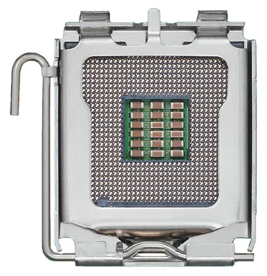
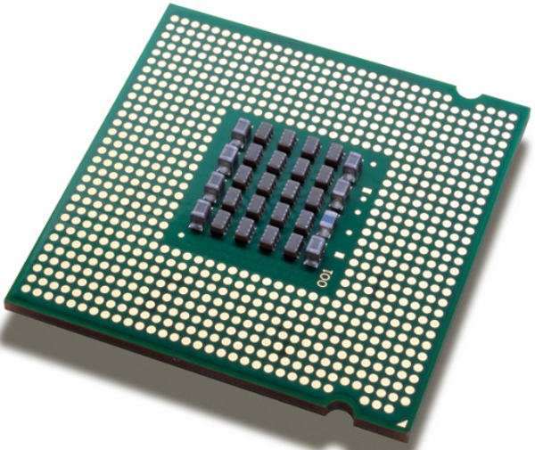
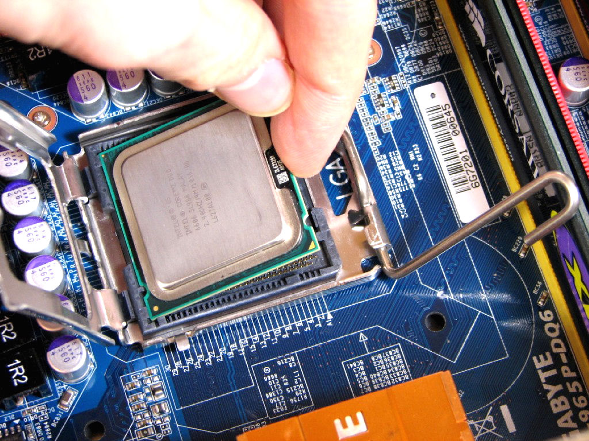
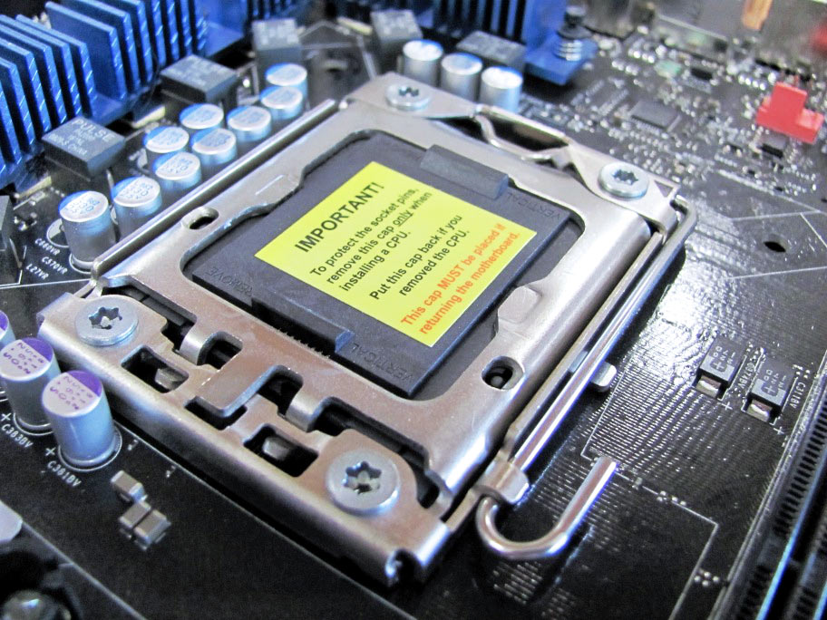
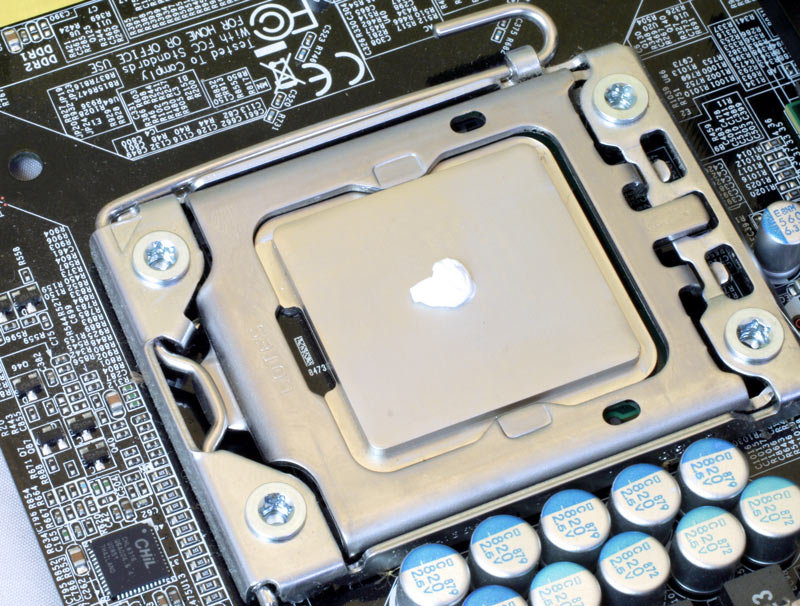

Installer correctement le processeur
Nous allons maintenant voir comment insérer le processeur dans le socket de la carte mère prévu à cet effet, et également installé le ventilateur. Cette partie est simple mais délicate.
Installation du processeur
Retirez le levier latéral du support bloquant, cela aura pour effet de déverouiller le socket pour permettre d'y placer le processeur. Ouvrez complètement le socket.
Vous devez maintenant présenter le processeur vers le socket comme vu sur l'image 1 ci-dessous. Déposez le sur le socket SANS FORCER ! Le processeur devrait apparaître comme sur l'image 2.
 Dans le cas d'un processeur AMD, vous devez repérer les emplacements des pins sur le processeur, et l'insérer suivant le marqueur du processeur et du socket.
Vérifiez que le processeur est bien installé dans le socket ; il ne doit pas bouger (ou légèrement) dans l'emplacement. Vérifiez également qu'il soit mis dans le bon sens : les empalcements des pins doivent correspondre sur le processeur ainsi que sur l'emplacement du socket.
Une fois avoir vérifié que le processeur est bien installé, remettez le levier latéral sur son support bloquant. Vous devez forcer un minimum pour pouvoir bloquer le levier. Une fois ceci fait, le processeur est installé.
Installer le Ventirad
Il faut maintenant installer la pâte thermique sur votre processeur. Elle permet de mieux conduire la chaleur. Si vous avez opté pour garder le ventilateur du processeur d'origine, sachez que le ventilateur possède déjà de la pâte thermique et qu'il est donc inutile d'en rajouter.
Veuillez à ne pas trop en mettre. Une trop grosse portion de pâte thermique aurait l'effet inverse et votre processeur chaufferait plus qu'il n'en a besoin. Une noisette devrait suffir.
Une fois ceci fait, il faut fixer le ventirad à la carte mère. Posez le ventirad sur le processeur, puis vissez le ventirad à la carte mère.
Etape suivante